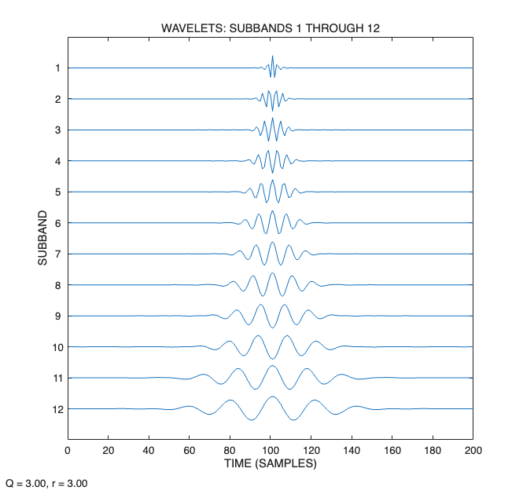
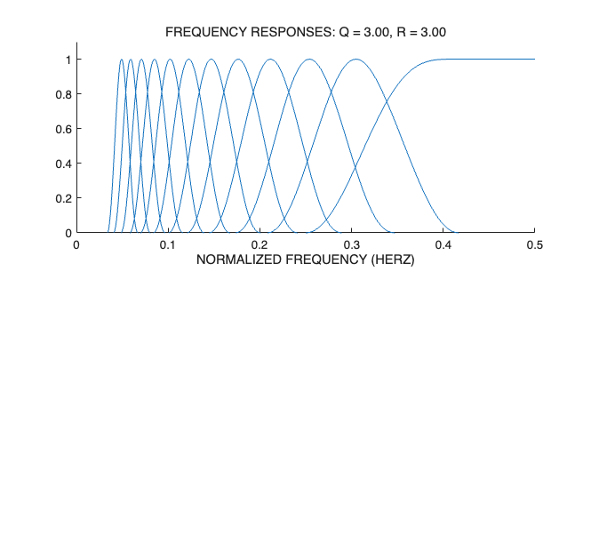

Demo1: Tunable Q-factor wavelet transform (TQWT)
Ivan Selesnick, Polytechnic Institute of New York University, November 2010.
Contents
Set parameters
% Uncomment one of the following two lines: Q = 3; r = 3; J = 12; % High Q-factor wavelet transform % Q = 1; r = 3; J = 7; % Low Q-factor wavelet transform
Verify PR property of wavelet transform
Verify perfect reconstruction property
N = 200; x = rand(1,N); % Make test signal w = tqwt(x,Q,r,J); % TQWT y = itqwt(w,Q,r,N); % Inverse TQWT recon_err = max(abs(x - y)); % Reconstruction error fprintf('Reconstruction error: %e\n', recon_err)
Reconstruction error: 4.440892e-16
Verify Parseval's energy identity
The energy in the wavelet domain equals the signal energy.
E = sum(abs(x).^2); % Energy of signal Ew = 0; % Energy in wavelet domain for j = 1:J+1 Ew = Ew + sum(abs(w{j}).^2); end fprintf('(Signal energy) - (Wavelet energy) = %e\n', E - Ew)
(Signal energy) - (Wavelet energy) = -2.842171e-14
Plot wavelet at multiple scales
Display the wavelets for the first several levels.
J1 = 1; J2 = J; figure(1), clf PlotWavelets(N,Q,r,J1,J2); orient tall print('-dpdf',sprintf('figures/demo1_Q%d_fig1', Q))

Plot frequency responses of the TQWT
figure(2), clf subplot(2,1,1) PlotFreqResps(Q, r, J) print('-dpdf',sprintf('figures/demo1_Q%d_fig2', Q))
